译自 Heterojunction Bipolar Transistors for Circuit Design: Microwave Modeling
and Parameter Extraction, First Edition. Jianjun Gao.
© 2015 Higher Education Press. All rights reserved. Published 2015 by John Wiley & Sons Singapore Pte Ltd.
本译文仅用于学术研究目的，版权归原作者及出版方所有。
1947 年，贝尔电话实验室发明的双极结型晶体管（BJT）开启了固态电路放大语音信号的时代。晶体管被定义为一种非线性三端有源半导体器件：两端之间的电流由第三端控制。晶体管是一种三端半导体器件，能够完成电子电路设计中两项最基本的功能：放大与开关。transistor 一词是 transfer 与 resistor 的合成词。双极晶体管的发明者 William Shockley、John Bardeen 与 Walter Brattain 因"对半导体的研究和发现晶体管效应"获得了 1956 年诺贝尔物理学奖——最初它是锗材料上的点接触单管。德州仪器的工作催生了第一只硅双极晶体管，以及后来的第一块集成电路。晶体管如今已繁衍出众多复杂类型，从至今仍被广泛使用的 BJT 到现代的 FET 器件。尽管 MOSFET 是使用最广泛的电子器件、CMOS 工艺是微波与射频电路设计的主流，BJT 器件依然在微电子中扮演关键角色——得益于其低成本、较高的工作频率、低噪声性能与大功率处理能力。BJT 还可与 MOSFET 结合，构成利用 MOSFET 高输入阻抗与低功耗、同时利用 BJT 极高频工作与大电流驱动能力的创新电路，这类工艺被称为 BiCMOS 工艺。
众所周知，HBT 器件的基本工作机理与 BJT 非常相似。因此，在为 HBT 器件建立电路模型之前，先简要讨论涉及 pn 结二极管的 BJT 器件，对理解 HBT 器件的行为大有裨益。电路分析的精度取决于所用的器件模型；电路设计者必须透彻理解常用模型的来源以及各自所含的近似程度。本章的目标是介绍 pn 结二极管与 BJT 器件的微波/射频建模与参数提取技术。
通过引入杂质原子可以引发半导体电学特性的重大改变，这一过程称为掺杂。对 n 型掺杂而言，施主杂质原子向导带添入电子而不在价带产生空穴；对 p 型掺杂而言，受主原子在价带产生空穴而不在导带产生电子。半导体器件的工作本质上取决于半导体自身的物理行为。pn 结始终是半导体器件的基本构件，pn 结理论至今仍是半导体器件物理的基础。把 p 型半导体与 n 型半导体物理接触在一起，便得到研究有源半导体器件时最重要的概念之一：pn 结。它在单一硅晶体内通过形成不同掺杂区来制作：一个区域掺入受主杂质原子形成 p 区，相邻区域掺入施主原子形成 n 区。
图 3.1 给出了未加外加电压时带电荷分布的 pn 结。其中 q 为电子电荷，NA 与 ND 分别为 p 侧与 n 侧的掺杂浓度。注意图 3.1 中 NA 高于 ND，这是实际中的典型情形。由于 p 区空穴浓度高、n 区空穴浓度低，空穴越过结从 p 侧向 n 侧扩散，留下带负电的空间受主离子；同理，电子越过结从 n 侧向 p 侧扩散，留下带正电的施主离子。图 3.1 中给出了净带正电与净带负电的两个区域，它们统称为空间电荷区，又称耗尽区（不含任何可动电荷）。n 侧的净正电荷与 p 侧的净负电荷之间建立起一个电场，它会阻碍空穴向 n 区、电子向 p 区的扩散。事实上，耗尽区上由内建电场造成的电压降如同一个势垒，空穴与电子的扩散电流必须克服它。该电势势垒称为内建电势势垒，记作 Vbi。
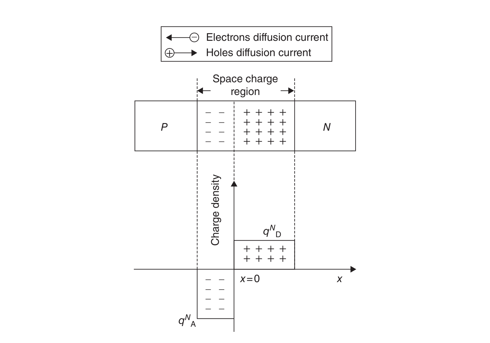
内建电压 Vbi 可以用 p 侧与 n 侧的掺杂浓度表示：
其中 Vt = kT/q，称为热电压；q 是电子电荷，k 是玻尔兹曼常数，T 是绝对温度（通常取 290 K），ni 是本征载流子浓度。可以看出，内建电压 Vbi 既与掺杂浓度有关，也与温度有关。
对于不同的半导体材料（如 Si、Ge、GaAs），即使掺杂浓度相同，内建电压也不同——这是由本征载流子浓度的显著差异造成的。室温下，硅材料的 ni 典型值为 1.5 × 1010 cm−3，GaAs 材料为 1.8 × 106 cm−3，Ge 材料为 2.4 × 1013 cm−3。图 3.2 给出了硅与 GaAs 材料的内建电压随掺杂浓度 NA 与 ND 的变化。对硅而言，Vbi 在 0.6–0.9 V 范围内；对 GaAs 则为 1.1–1.3 V。
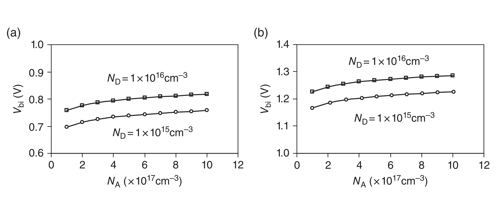
空间电荷区的宽度由两部分组成：正空间电荷区向 n 型半导体的延伸 Wn，以及负空间电荷区向 p 型半导体的延伸 Wp。Wn 与 Wp 可用 NA 与 ND 表示 [1]：
其中 ε = εrεo 为介电常数，εo 为真空介电常数，εr 为相对介电常数。对硅 εr = 11.7，对 GaAs εr = 13.1。
空间电荷区的总宽度 W 是式 (3.2) 与 (3.3) 之和：
图 3.3 给出了硅与 GaAs 材料的空间电荷区宽度随掺杂浓度 NA 与 ND 的变化。由于净受主浓度 NA 大于净施主浓度 ND，空间电荷区宽度 W 随 ND 的减小而增大，而随 NA 的变化大致保持不变。
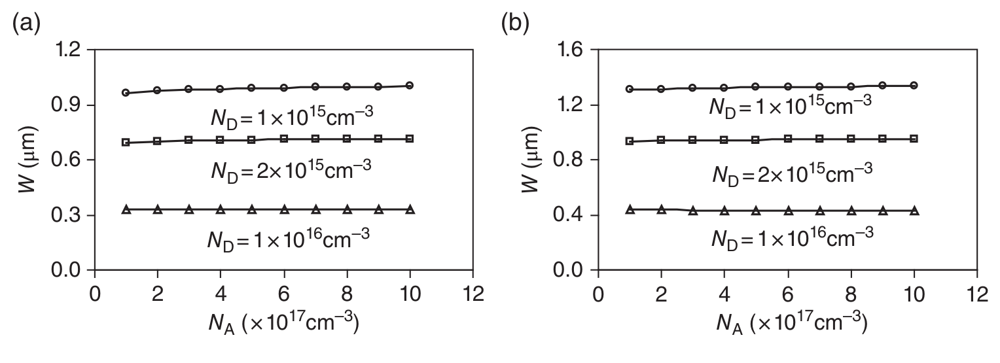
二极管是最基本的半导体器件之一，它既是构建晶体管的基础，也是最简单、最基本的非线性元件。本节将介绍 pn 结在三种不同偏置条件下的能带图与空间电荷区宽度：
众所周知，对本征半导体而言，导带中电子的浓度等于价带中空穴的浓度，并且若电子与空穴的有效质量相等，本征费米能级恰好位于带隙中央（如图 3.4 所示）。掺入施主与受主杂质原子会改变材料中电子与空穴的分布 [2]。对 n 型半导体，随着施主浓度升高，费米能级向导带靠近（如图 3.5 所示）；对 p 型半导体，随着受主浓度升高，费米能级向价带靠近（如图 3.6 所示）。
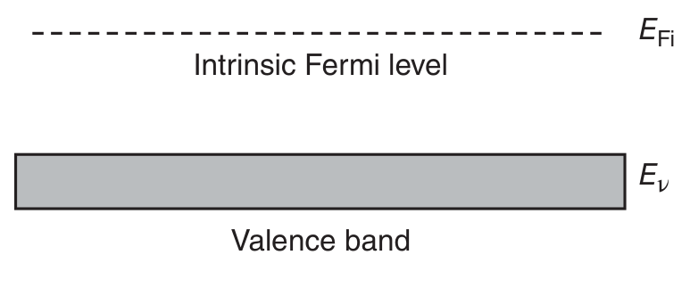
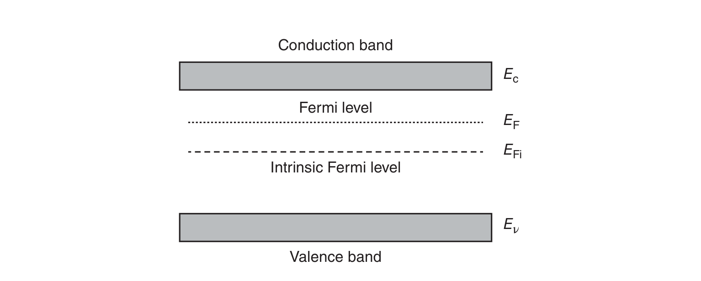
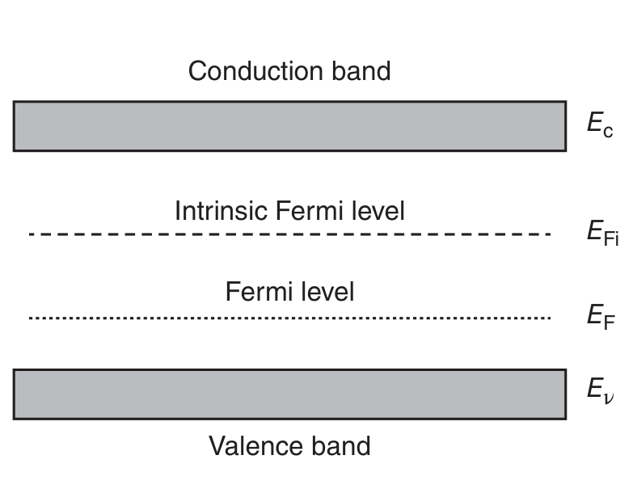
在开路条件（即不存在外加电流）下，pn 结处于热平衡——费米能级在整个系统中处处相等。由于导带与价带的位置会随 p 侧与 n 侧的费米能级而改变，电子能量在穿越空间电荷区时随距离按二次规律变化。图 3.7 给出了 pn 结在端口开路时的能带图，其中 Ec 与 Ev 分别为导带能量与价带能量，EFn 与 EFp 分别为 n 型与 p 型半导体的费米能级。耗尽区上的电压降即为内建电压 Vbi。若在 p 区与 n 区之间施加外加电压，系统将不再处于平衡状态，费米能级在整个系统中也不再恒定。
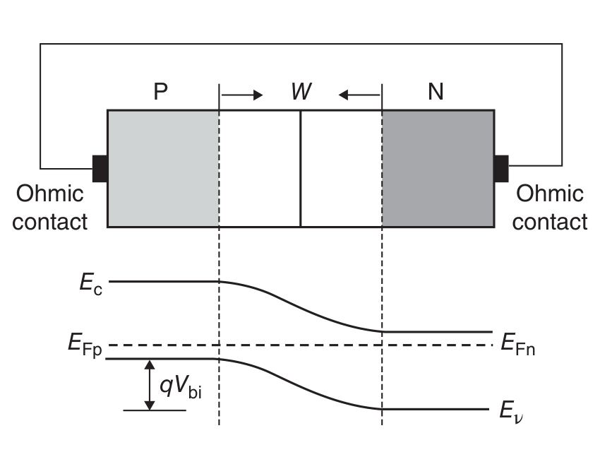
现在考虑反向偏置情形（对 p 区相对 n 区施加负电压，即 VR < 0）：外加的反向偏压 VR 的方向是增强势垒电压，确实如此——它把有效势垒电压提高到 Vbi − VR。此时 n 侧的费米能级低于 p 侧的费米能级。这减少了向 n 区扩散的空穴数与向 p 区扩散的电子数。图 3.8 给出了施加反向偏压 VR 时 pn 结的能带图。此时空间电荷区的宽度可由式 (3.4) 中的 Vbi 替换为 Vbi − VR 得到：
接下来考虑正向偏置情形（对 p 区相对 n 区施加正电压，即 VF > 0）：外加的正向偏压 VF 的方向是削弱内建电压，使势垒电压减小为 Vbi − VF。图 3.9 给出了施加正向偏压 VF 时 pn 结的能带图。此时空间电荷区的宽度比零偏置时更窄，p 区与 n 区之间的势垒也降低了。空间电荷区的宽度可由式 (3.4) 中的 Vbi 替换为 Vbi − VF 得到：
由式 (3.5) 与 (3.6) 可见：空间电荷区宽度随反向偏压 VR 的增大而增大，随正向偏压 VF 的增大而减小。图 3.10 给出了硅基与 GaAs 基 pn 二极管在不同偏置条件下的空间电荷区宽度。注意当正向电压超过内建电压时，宽度将趋于零。
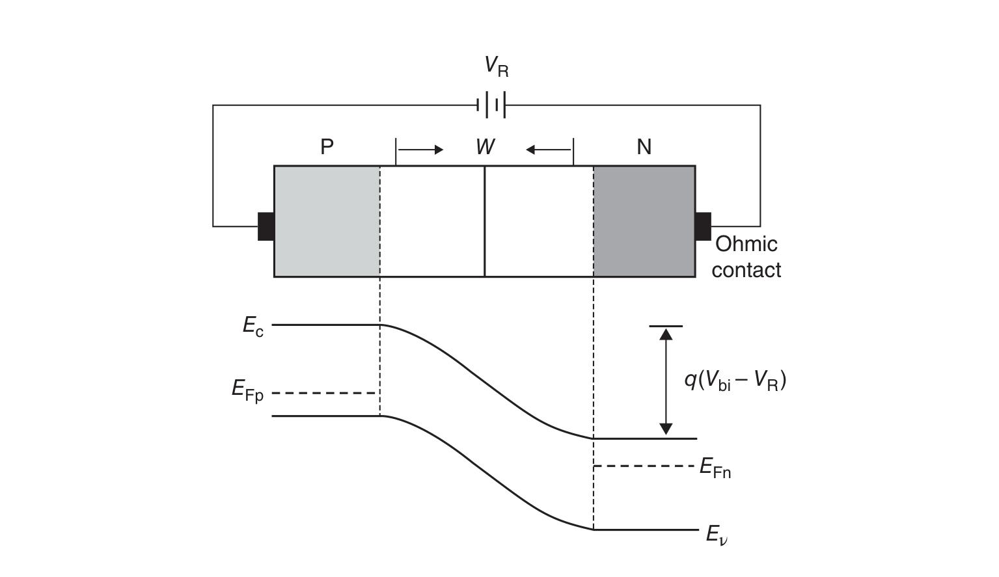
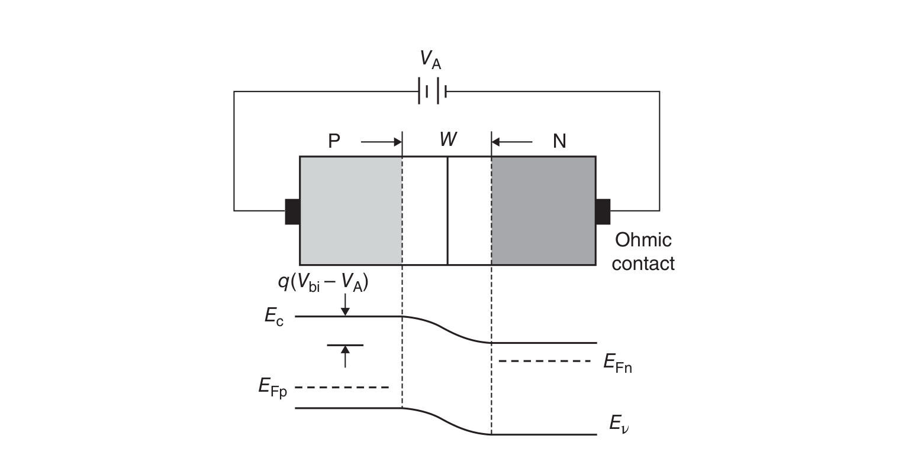
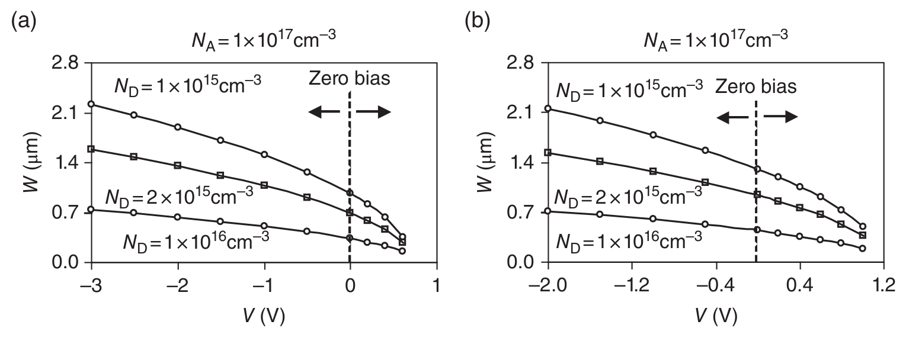
图 3.11 给出了硅基与 GaAs 基 pn 二极管的 I–V 特性：正向偏置时电流是电压的指数函数，反向偏置时电流饱和到一个恒定值（饱和电流）。由于 GaAs 二极管的内建电压高于硅基二极管，GaAs 二极管 I–V 特性的拐点电压也高于硅二极管。
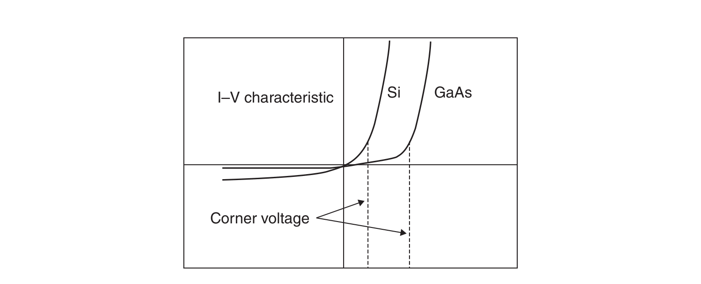
本节给出一种由集总元件构成的简单结二极管模型，它既便于直观与解析的电路分析，也特别适合用计算机进行电路分析。利用该模型，对二极管开关瞬态的解析与计算机分析表明：它能复现开关电路中观察到的许多二极管现象。
图 3.12 给出了 pn 结二极管的典型非线性等效电路模型 [3]；该模型由两部分组成：
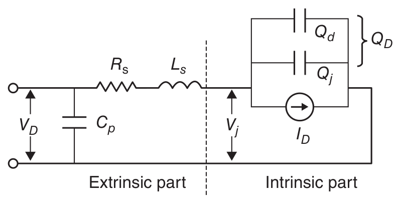
描述 pn 结二极管电流-电压关系（I–V 特性）的解析表达式可写为：
其中理想发射系数 n 是一个附加参数，用于使模型与实际测量更加吻合；多数应用中取 1.0–2.0。VT 是称为热电压的常数：
k 是玻尔兹曼常数，1.38 × 10−23 J/K；T 是二极管的绝对温度（K）（T = 273 K + 摄氏温度）；q 是电子电荷的量值（1.6 × 10−19 C）。
Vj 是本征电压：
其中 VD 为外加电压，ID 为二极管电流。
Is 是反向饱和电流，在给定温度下对某只二极管是常数。反向饱和电流 Is 也称"标度电流"，因为它与二极管的横截面积成正比。其解析表达式可由空穴扩散电流与电子扩散电流相加得到：
其中 Aj 是 pn 结二极管的横截面积，Dn、Dp 分别是少数载流子电子与少数载流子空穴的扩散系数；常数 Ln、Lp 分别称为少数载流子电子与空穴的扩散长度；npo 是 p 区的热平衡少数载流子电子浓度，pno 是 n 区的热平衡少数载流子空穴浓度。
npo 与 pno 可用掺杂浓度表示：
把 (3.11) 代入 (3.10)，得
电荷存储有两种形式：由掺杂浓度在耗尽区产生的电荷存储 Qj，以及注入中性区的少数载流子电荷产生的电荷存储 Qd。总电荷可表示为 Qj 与 Qd 之和：
其中 ID 为二极管电流，τD 为二极管的渡越时间。
到目前为止所讨论的二极管模型保持了器件物理的严格非线性本质，因此可用于几乎任何电路条件下的静态与动态分析。若二极管工作在某个特定直流偏压点附近、而信号在该点附近的变化很小，则基于非线性模型的线性化构造一个线性小信号模型会非常方便。图 3.13 给出了 pn 结二极管对应的线性等效电路模型，其中 gd 为小信号电导，Cj 与 Cd 分别为结电容与扩散电容。与非线性模型相比，外征元件保持不变，本征部分变成了一个阻容（RC）网络。
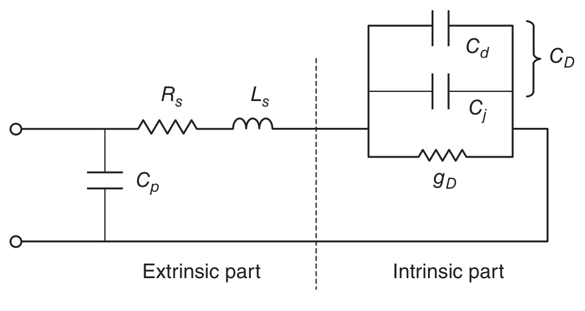
结电容 Cj 的解析表达式为：
在零偏置条件（Vj = 0）下，结电容变为：
把 (3.17) 代入 (3.16)，得
其中 m 是一个称为缓变系数的常数，在商用电路仿真器（如 SPICE）中的默认值为 0.5，实际器件可调：其取值通常在 1/3 到 1/2 之间，取决于浓度从 p 侧到 n 侧的变化方式。
扩散电容 Cd 的解析表达式为：
二极管的总电容是结电容 Cj 与扩散电容 Cd 之和，即 Ct = Cj + Cd。图 3.14 给出了二极管电容随偏置电压变化的行为，可以得出两个重要结论：反向偏置时，结电容 Cj 是主导分量；正向偏置时，Cj 与 Cd 同时占主导。
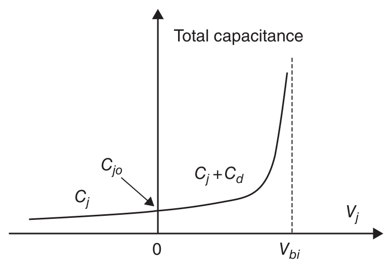
小信号电导 gd 等于电流 ID 对本征电压 Vj 的导数：
反向偏置时，电流 ID 为负并趋近于饱和电流 Is，因此小信号电导 gd 为零。反之，正向偏置时电流 ID 远大于饱和电流 Is，电导 gd 近似等于 ID。
图 3.15 给出了 pn 结二极管的噪声等效电路模型，其中包含三种不同的噪声源：热噪声源、散粒噪声源与闪烁噪声源。
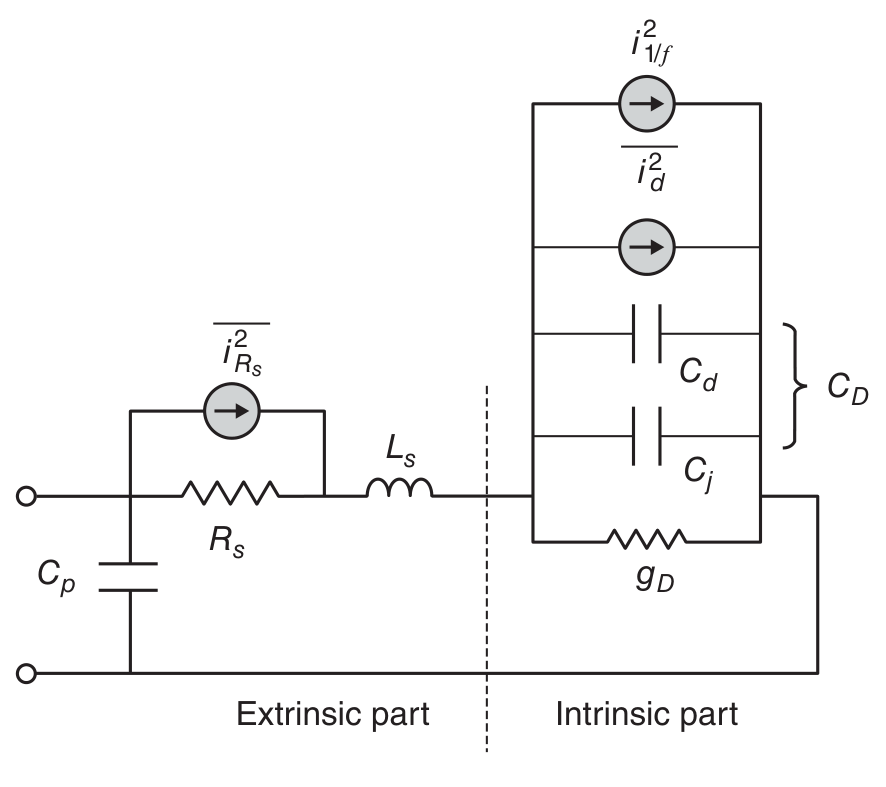
热噪声又称 Johnson 噪声或 Nyquist 噪声，由热能引起电子随机运动而产生。大多数无源与有源器件中都能发现热噪声。电阻 Rs 在频率范围 Δf 内的热噪声电流可表示如下：
其中 Δf 为噪声带宽。温度下的一只含噪电阻可建模为 0 K 的理想无噪电阻串联一个噪声电压源（或建模为 0 K 的理想无噪电阻并联一个噪声电流源），如图 3.16 所示。
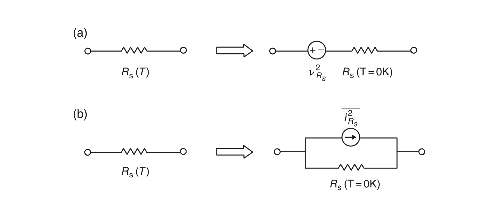
从源发射出的电子数目的涨落构成散粒噪声。散粒噪声发生在电子管或固态器件中电子越过结或其他不连续处时，常见于半导体器件（如 pn 结或晶体管）中，并与直流电流的平方根成正比。它有如下两个重要特征：
其噪声幅度表示为：
其中 Id 为直流电流，q 为电子电荷。
1/f 噪声存在于许多自然现象中，如核辐射、电子在导体中的流动，甚至存在于环境中。在电气工程中它又称闪烁噪声。闪烁噪声电流 i21/f 可表示为：
其中 kf 与 αf 为拟合系数。
图 3.17 给出了 1/f 噪声电流随频率的变化：噪声功率随偏置电流的增大而增大；与热噪声和散粒噪声不同，闪烁噪声随频率降低而增大，在低频段与频率的反比关系几乎精确为 1/f。闪烁噪声本质上是随机的，但其频谱不平坦，因此不是白噪声。
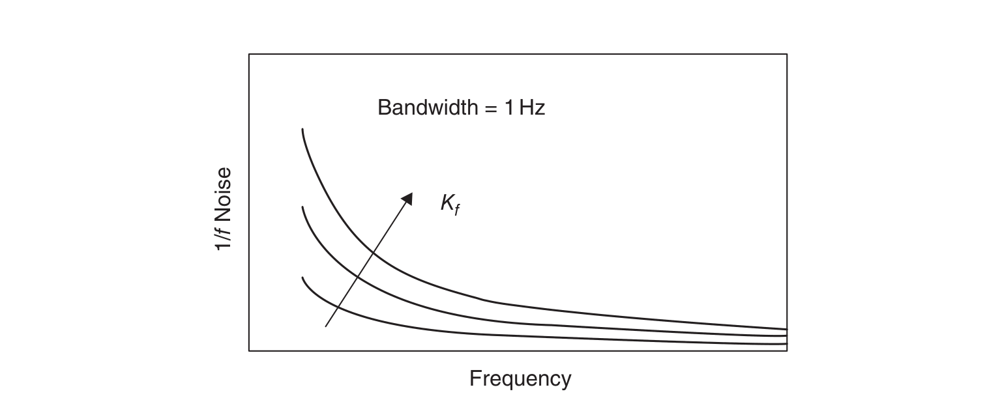
表 3.1 汇总了常用商用电路仿真器中 pn 结二极管模型的参数。确定全部模型参数后，等效电路模型即可用于预测二极管的静态与动态性能。下面将介绍一种用于确定静态模型参数的简单优化方法 [4]。
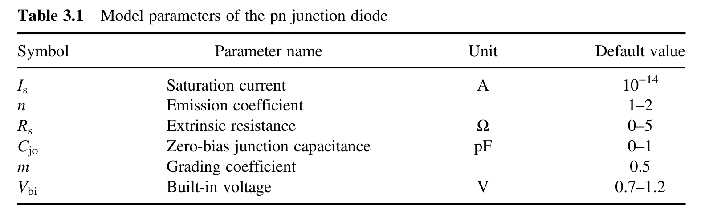
由式 (3.7) 得
把 (3.9) 代入 (3.25)，得
其中
于是，若能确定三个未知参数 Rs、a 与 b，则 n 与 Is 亦可随之导出。式 (3.26) 给出了产生电流 ID 所需的外加电压 VD；因此可用最小二乘法优化 Rs、a 与 b。为此定义误差判据 X 如下：
其中求和遍历 m 组由实验确定的 ID 与 VD 数据对。Rs、a 与 b 的最优组合应使 X 取极小值，即
这组方程可写成：
其中
基于最小二乘拟合，可以确定三个未知参数 Rs、a 与 b。图 3.18 给出了外征电阻 Rs 对二极管电流的影响：在较低的外加电压范围内 Rs 的影响可以忽略，因此要确定外征电阻 Rs 需要较大的外加电压。
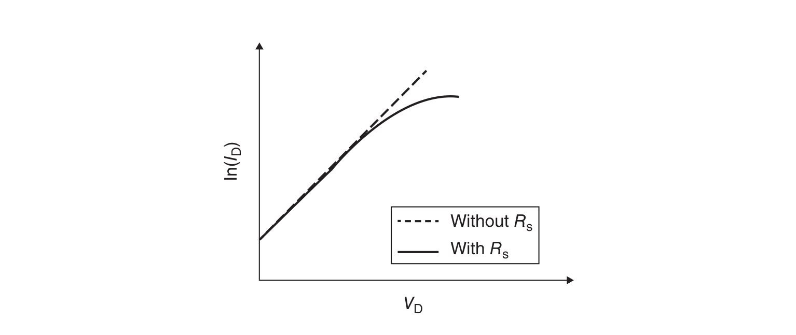
本节开始描述 BJT 的物理工作机理。众所周知，它之所以被称为双极晶体管，是因为电子与空穴两种载流子的流动都参与器件工作。相比 FET 等其他类型晶体管，双极晶体管具有以下若干固有优势 [5]：
BJT 的另一项优势是较低的 1/f 噪声。图 3.19 给出了双极与场效应两类半导体器件的 1/f 噪声随频率的变化：可以观察到，闪烁噪声在 FET 中更为突出，而在 BJT 中较弱，且 FET 的转角频率高于 BJT。这意味着在设计低相位噪声器件方面，BJT 优于 FET。由于集电极-发射极电流受基极与发射极之间电流的控制，BJT 通常被描述为电流控制器件；与 FET 不同，BJT 是一种低输入阻抗器件。正是这种指数关系，使 BJT 的跨导高于 FET。
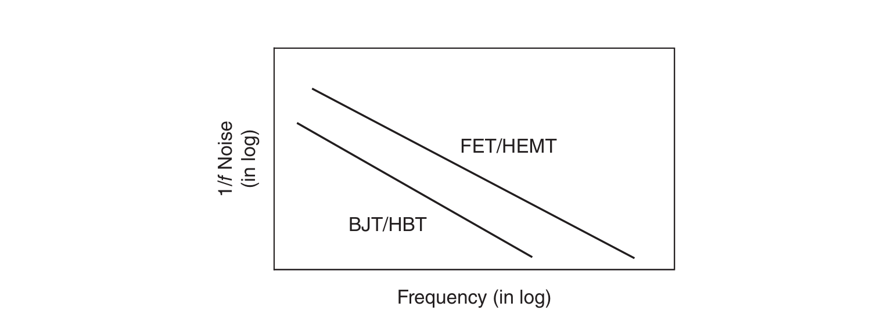
BJT 由三段半导体材料拼接而成，每段具有不同的掺杂浓度。三段可以是夹在 p+ 与 p 层之间的薄 n 区，也可以是夹在 n+ 与 n 层之间的 p 区，其中上标加号表示掺杂更浓的材料。相应地，所得到的 BJT 分别称为 PNP 与 NPN 晶体管。晶体管的每个半导体区都连接一个端子，分别标为发射极（E）、基极（B）与集电极（C）。晶体管由两个 pn 结构成：基极-发射极结与集电极-基极结，它们相距足够近因而彼此相互作用。从这个意义上讲，BJT 可视为两个背靠背的二极管。图 3.20 与图 3.21 分别给出了两类 BJT 的大致构造、电路符号与命名。
图 3.22 给出了更为真实的 npn BJT 截面图与立体图。注意集电极实际上包围着发射极区，这就使得注入到薄基区的电子很难逃脱被收集。另外注意器件并不对称：尽管晶体管可能含有两个 n 区或两个 p 区，发射极与集电极中的杂质掺杂浓度不同，而且这些区的几何形状也可能大相径庭。通常发射极掺杂浓度最高，集电极掺杂浓度最低。图 3.23 给出了均匀掺杂 npn 与 PNP BJT 的理想掺杂分布，发射极、基极与集电极的典型掺杂浓度量级分别为 1019、1017 与 1015 cm−3。
npn BJT 的主要工艺步骤如下：
npn 与 PNP 晶体管是互补器件。我们将用 npn 晶体管来分析双极晶体管理论，但同样的基本原理也适用于 PNP 器件。
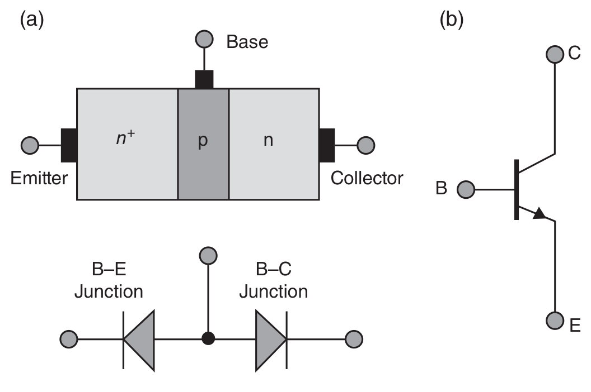
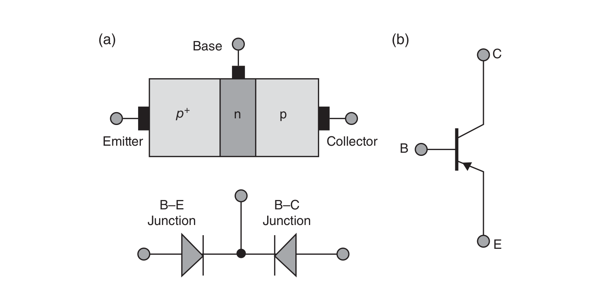
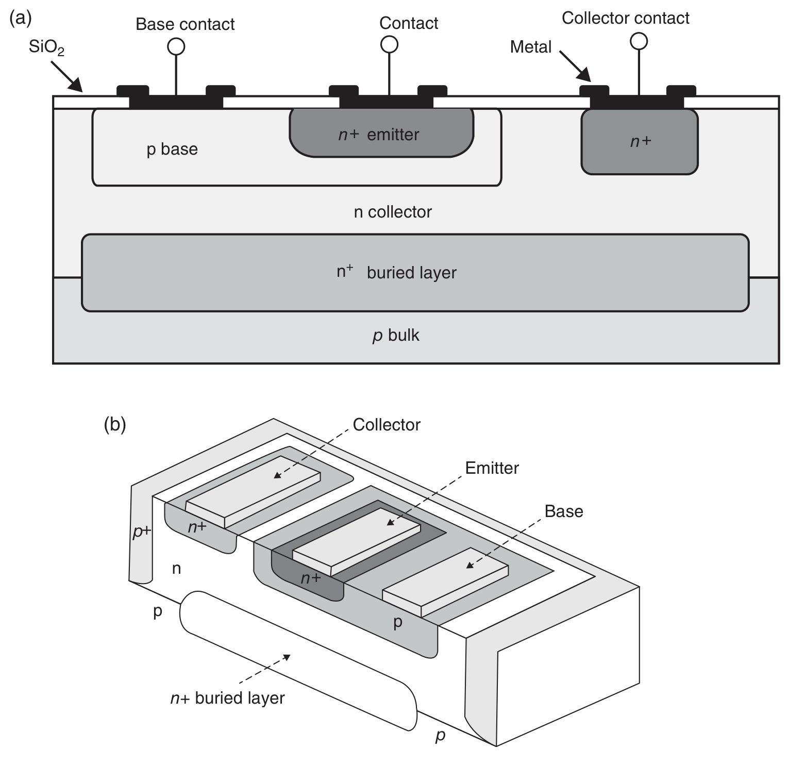
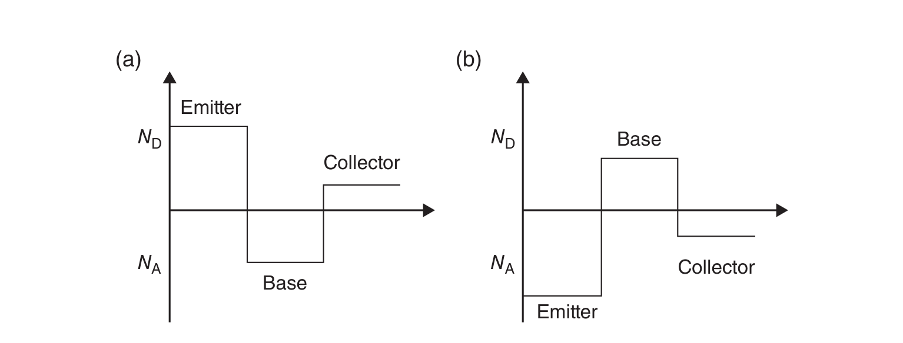
根据两个结（基极-发射极结与集电极-基极结）的偏置条件不同，可以得到 BJT 的不同工作模式。先约定如下符号：
如图 3.24 所示，五种工作模式的定义如下：
其中 VBE 与 VCB 是两个结上的电压。下面将分别讨论五种工作模式的能带图。
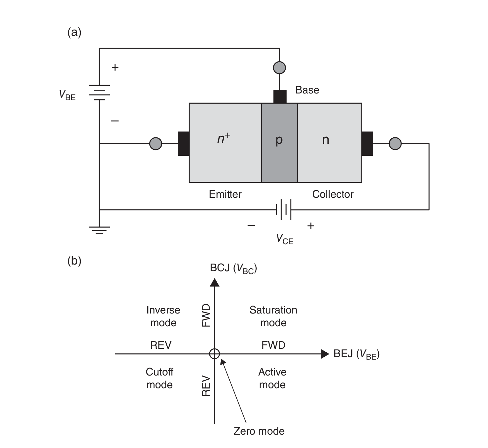
零模式下 BEJ 与 BCJ 均为零偏置，两个结处于热平衡态——费米能级在整个系统中处处相等。图 3.25 给出了 npn BJT 零模式下的能带图。事实上，发射极的较高掺杂浓度使 BEJ 处的势垒高于 BCJ。
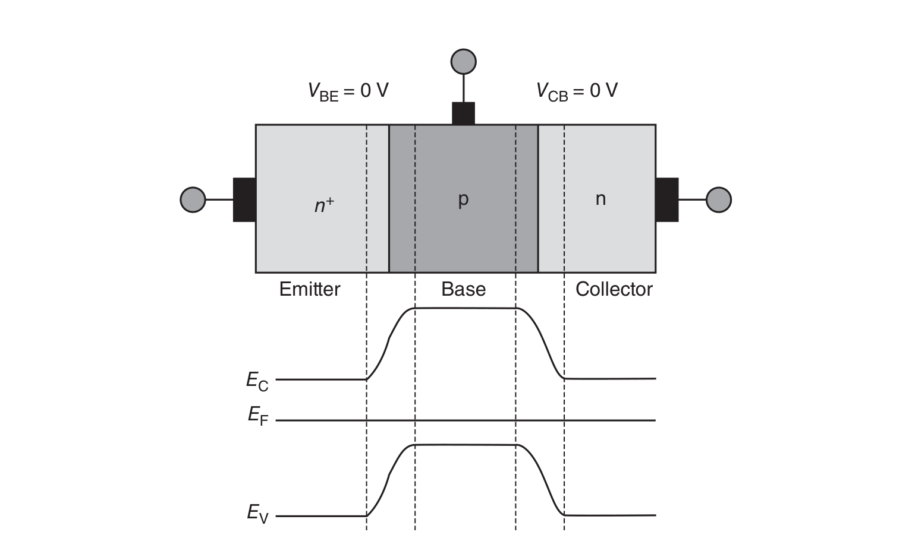
在 BJT 的五种工作模式中，放大模式最为重要。放大模式即 BEJ 正向偏置、BCJ 反向偏置的工作模式，也称为正向放大模式或正常工作模式。图 3.26 给出了 npn BJT 放大模式下的能带图与电子流向。由于基极-发射极结正偏，发射极的电子越过基极-发射极空间电荷区扩散进入基区；随后电子穿过基区扩散到反向偏置的基极-集电极空间电荷区。该空间电荷区中的电场将电子扫入集电区。扩散穿过基区的电子中，有一部分会与基区多数载流子空穴复合。但由于基区通常非常薄（小于 1 μm 量级）且是轻掺杂的 p 型层，只有少量电子会与基极电流提供的空穴复合。
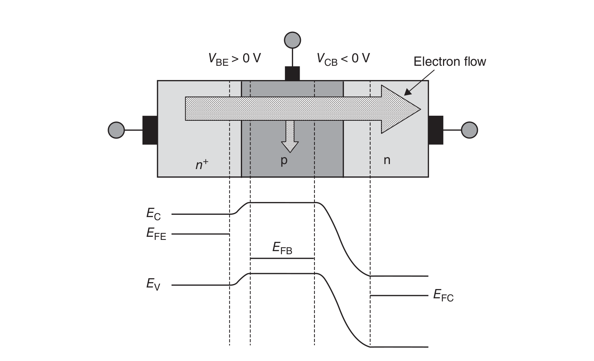
发射极注入效率因子 η 是 BJT 的一个重要性能指标，其解析表达式近似可写为 [2]
其中 InE 是基区中少数载流子电子的扩散电流，IpE 是发射区中少数载流子空穴的扩散电流；NB 与 NE 分别是基区与发射区的掺杂浓度；DB 与 DE 分别是基区与发射区中少数载流子的扩散系数；WB 与 WE 分别是中性基区与中性发射区的宽度。由式 (3.30) 可以看出：减小基区的宽度与掺杂浓度，可以提高发射极注入效率因子 η。
饱和模式是通常在模拟电路中应避免的工作区，因为此时晶体管的增益很低；它通常在处理开关电路时起重要作用。饱和模式包含 BEJ 与 BCJ 同时正偏，集电极-发射极电压非常小（通常小于 0.3 V）。与零偏置条件（零模式）相比，两个结的势垒高度均下降。电子从发射极净流向集电极，这意味着基极-发射极势垒低于 BCJ。图 3.27 给出了 npn BJT 饱和模式下的能带图与电子流向。在该模式下，基极电流的增大不再引起集电极电流的进一步增大。
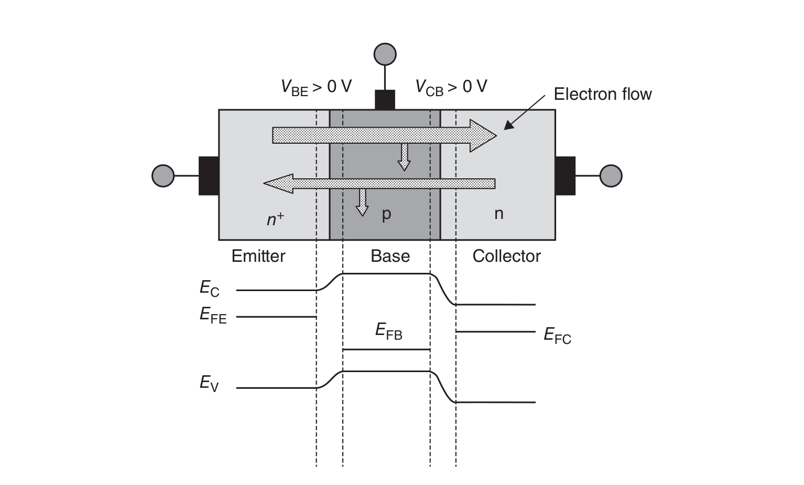
截止模式即 BEJ 与 BCJ 都反向偏置的工作模式。与零偏置条件（零模式）相比，两个结的势垒高度均升高，电子不会从发射极净流向集电极。图 3.28 给出了 npn BJT 截止模式下的能带图。
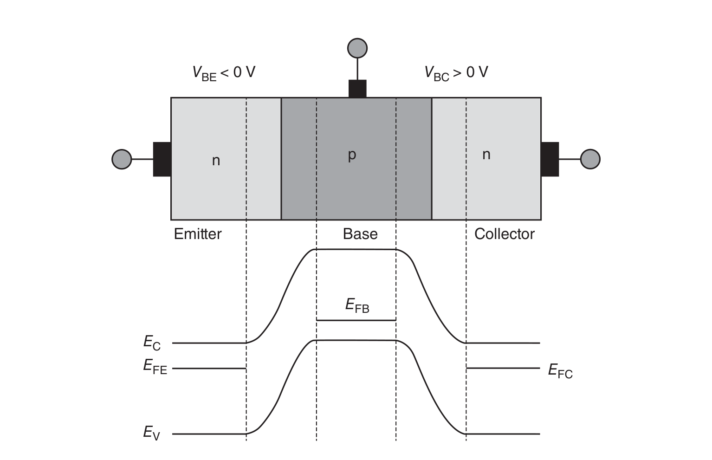
反模式即 BEJ 反向偏置、BCJ 正向偏置的工作模式，发射极与集电极的角色互换。电子从集电极穿过 BCJ 扩散到基区，再扩散进入发射区。需要注意的是，基极-集电极面积通常远大于基极-发射极面积，因此并非所有注入电子都会被发射极收集。图 3.29 给出了 npn BJT 反模式下的能带图与电子流向。图 3.30 给出了 I–V 特性与不同工作模式。
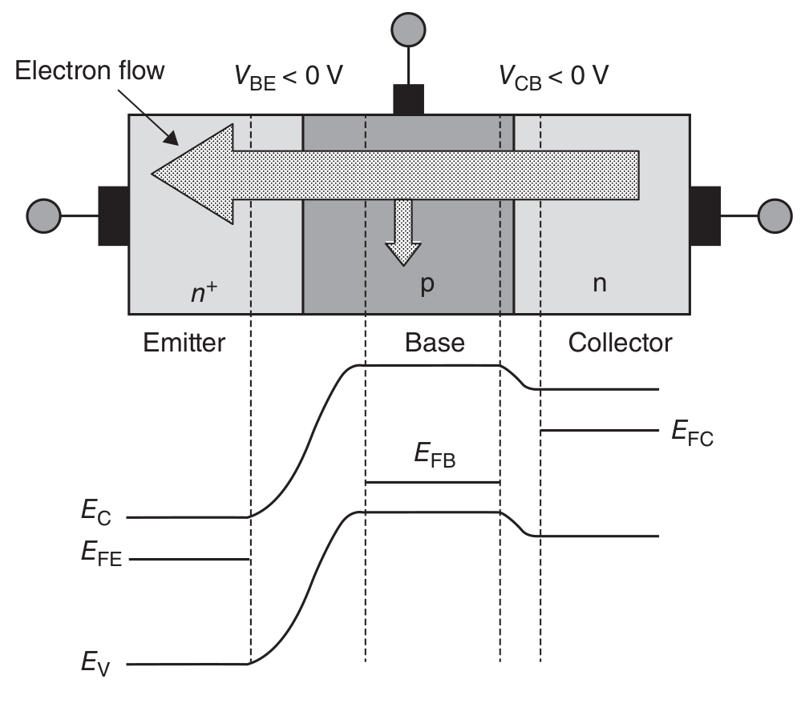
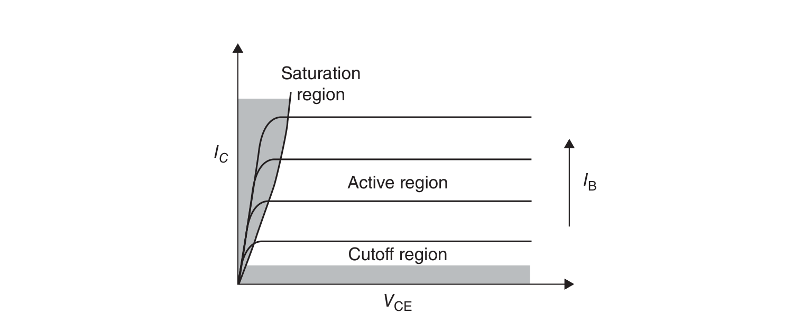
实际上中性基区宽度 WB 是基极-集电极电压 VBC 的函数，因为向基区延伸的空间电荷区宽度随基极-集电极电压变化而变化。因此基区宽度调制即基极-集电极电压变化所引起的基区宽度变化，又称 Early 效应（Early effect）。基区宽度调制的解析表达式为
其中 WB0 为 VBC = 0 时的基区宽度。
图 3.31 给出了某典型双极晶体管的集电极特性。理想情况下，集电极电流 IC 与基极-集电极电压 VBC 无关，因而曲线斜率为零，即 dIC/dVCE = 0。然而由于 Early 效应，电流-电压曲线存在一个非零斜率，说明集电极电流将随集电极-发射极电压增大而增大。所有直线的斜率使得它们将交汇于一个负电压 VA，称为 Early 电压。该电压可用来表征晶体管的输出阻抗：
其中 go 为输出电导。Early 电压 VA 是晶体管规格表中常见的参数，其典型取值在 100–300 V 范围内。
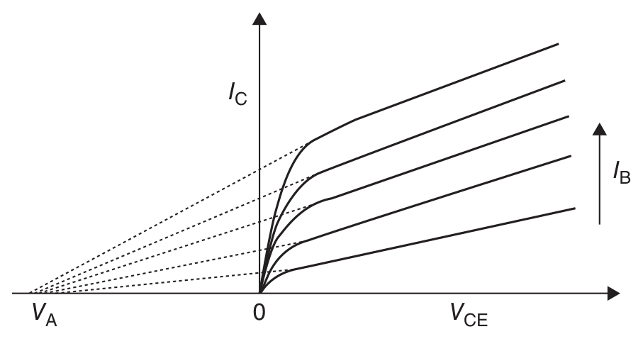
对于 BJT 器件有两个重要的直流参数：共发射极电流增益 β 与共基极电流增益 α。
共发射极电流增益 β 的定义为集电极电流与基极电流之比：
共基极电流增益 α 的定义为集电极电流与发射极电流之比：
图 3.32 给出了共发射极电流增益 β 随集电极电流 IC 的变化；β 随电流的变化可分为三个区。区 I 为低电流区，β 随 IC 增大而增大；区 II 为中电流区，β 大致保持常数；区 III 为高电流区，β 随电流增大而下降。共发射极电流增益 β 在高电流下下降的原因是基极-集电极耗尽区内的电子浓度变得可与背景掺杂离子浓度相比拟，导致基区有效宽度急剧增加。这又称为 Kirk 效应（Kirk effect）或基区推出效应（base pushout）。结果是基极电阻随电流变化。在另一极端，低电流下，β 的减小可能是由于基极-发射极耗尽区内复合引起的过剩电流。
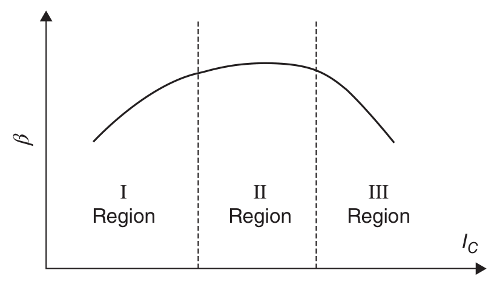
另一种效应是发射极集边效应（emitter crowding），它源于基极接触寄生电阻的分布性质，使得靠近基极接触的基极-发射极电压更高。靠近发射极边缘注入的电子多于中心处，导致发射极电流向边缘聚集。图 3.33 给出了 npn BJT 显示出发射极集边效应的截面图；可以将晶体管切成若干并联的小单元，并将每段基区电阻合并为一个等效外部电阻。
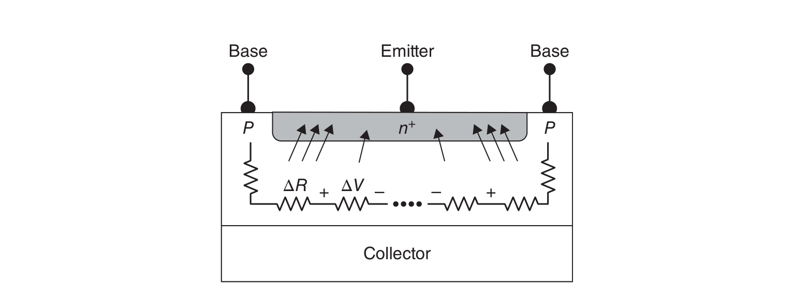
BJT 最常用的非线性模型有 [3]：
E–M 模型是双极晶体管的理想模型，可用于正向放大模式、反向放大模式、饱和与截止。E–M 模型被广泛用于双极晶体管电路静态行为的仿真。该模型的一个主要优点是其数学简洁性。其主要缺陷是忽略了晶体管中可能发生的多种现象：基区大注入、发射极集边、击穿、集电极空间电荷限制流、结过渡区中的明显净复合等。
E–M 模型是最流行的大信号模型之一。尽管该模型最早于 1954 年 12 月提出，但理解其基本模型需求以及它向更复杂大信号模型的扩展、绝大多数小信号模型的推导，仍然离不开它。E–M 模型包含两个二极管与两个电流源；两个二极管分别代表基极-发射极与基极-集电极二极管。电流源取决于流过每个二极管的电流。E–M 模型有两种版本：注入版本与传输版本。两种版本在数学上是等价的。
图 3.34 给出了注入版本的 E–M 模型：两个极性相对的正向与反向二极管，以及两个电流控制的电流源，它们使两个二极管通过基极接触相互耦合。端子电流可用正向与反向参考电流（IF 与 IR）表示为：
且
其中 IES 与 ICS 分别是 BEJ 与 BCJ 的饱和电流，αF 与 αR 分别是正向与反向共基极电流增益。
当 BEJ 正向偏置而 BCJ 反向偏置（器件工作在放大模式）时，反向参考电流 IR 可以忽略（如图 3.35a 所示）。类似地，当 BEJ 反向偏置而 BCJ 正向偏置（器件工作在放大模式）时，正向参考电流 IF 可以忽略（如图 3.35b 所示）。
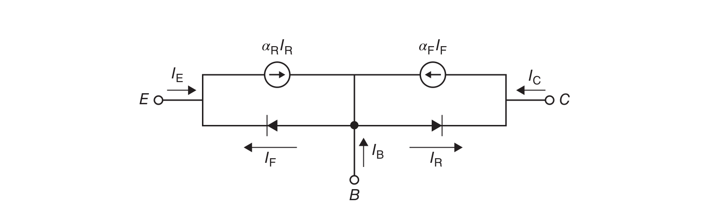
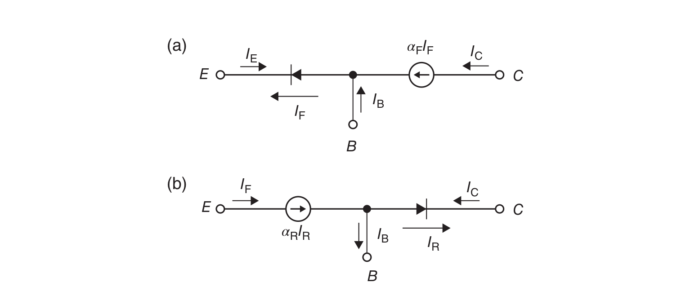
与注入版本相比，传输版本更受计算机仿真青睐。图 3.36 给出了传输版本的 E–M 模型。端子电流可用参考电流（IEC 与 ICC）表示为：
且
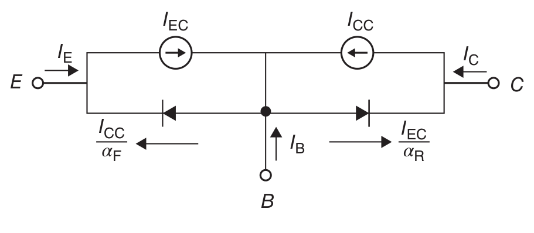
众所周知，一个完整的大信号模型由静态模型、电荷模型与寄生模型组成。图 3.37 给出了 BJT 的完整 E–M 大信号模型。电荷存储通过引入两类电容来建模：两个非线性结电容 CJC 与 CJE，以及两个非线性扩散电容 CDC 与 CDE。RB、RC 与 RE 分别是基极、集电极与发射极的外征电阻。
端子电流可表示如下：
且
βF 与 βR 分别是正向与反向共发射极电流增益，可用 αF 与 αR 表示：
电荷存储的解析表达式为
其中 τF 与 τR 分别是正向与反向载流子渡越时间，CJEO 与 CJCO 分别是 BEJ 与 BCJ 的零偏置电容，mE 与 mC 分别是 BEJ 与 BCJ 的缓变系数，φE 与 φC 分别是 BEJ 与 BCJ 的内建电压。
相应的结电容与扩散电容可表示为
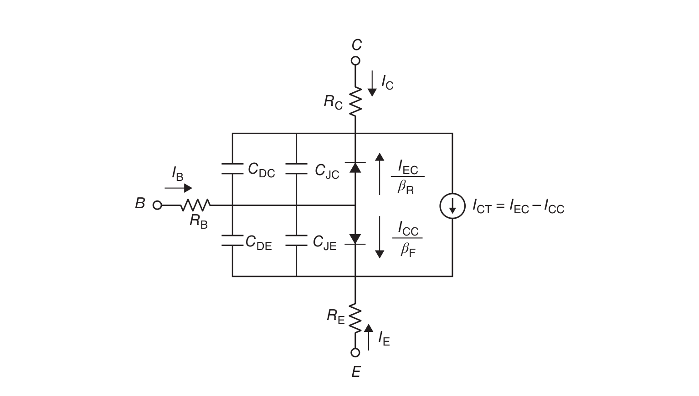
射频电路常工作于远小于电路中偏置电流与偏置电压的信号电平下。在这种情况下，可以推导出增量（小信号）模型，无需包含偏置量即可计算电路增益与端子阻抗。基于完整的 E–M 大信号模型，只需在正常工作模式下用泰勒级数展开并在一次项后截断，即可方便地对非线性关系做线性化，得到小信号模型。图 3.38 给出了 BJT 在正常偏置条件下的小信号等效电路模型。可以观察到：基极-发射极二极管用电阻 Rπ 与电容 Cπ 并联替代，基极-集电极二极管用电阻 Rμ 与电容 Cμ 并联替代，集电极电流用一个压控电流源替代。
正向与反向跨导 gmF 与 gmR 为
BEJ 与 BCJ 电阻 rπ 与 rμ 可表示为
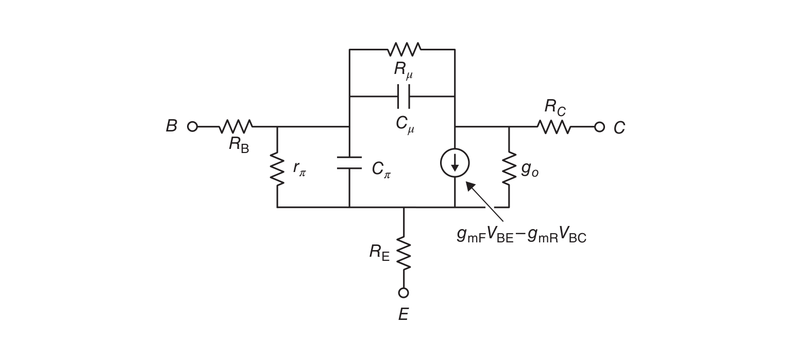
E–M 模型缺少对实际器件中若干重要二阶效应的描述，因此需要改进。相比 E–M 模型，G–P 模型考虑了三个最重要的物理效应 [3]：
图 3.39 给出了 G–P 大信号等效电路模型；用两个附加的二极管来表示低电流效应，并将一个新的因子 qb 引入电流源 ICT 中来表示基区宽度调制与大电流注入。
电流可表示为：
其中 ISE 与 ISC 分别是基极-发射极与基极-集极的漏电饱和电流；ηF 与 ηR 分别是正向与反向电流发射系数；ηC 与 ηE 分别是基极-集极与基极-发射极的非理想低电流发射系数。注意两个电流 Ibei 与 Ibci 用于模拟低电流效应。
用于表示 Early 效应与大电流注入的因子 qb 可写为
且
其中 Ikf 与 Ikr 分别为正向与反向 β 大电流滚降的拐点电流；VAF 与 VAR 分别为正向与反向 Early 电压。
端子电流可表示为：
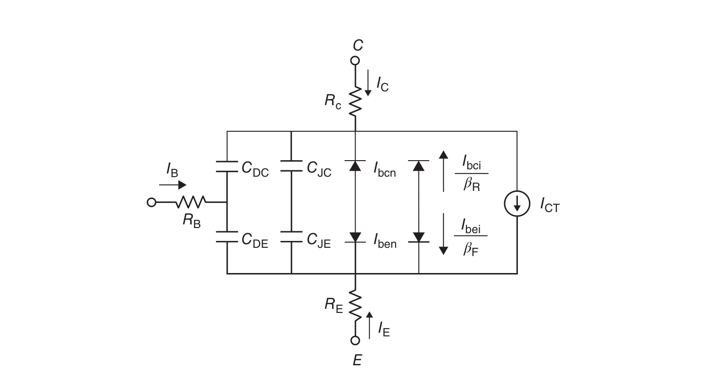
图 3.40 给出了在 VBC = 0 时 ln(IC) 与 ln(IB) 随 qVBE/kT 的关系图，由此可直接确定某些模型参数（如 Ikf、Ikr、ηF 与 ηE）。
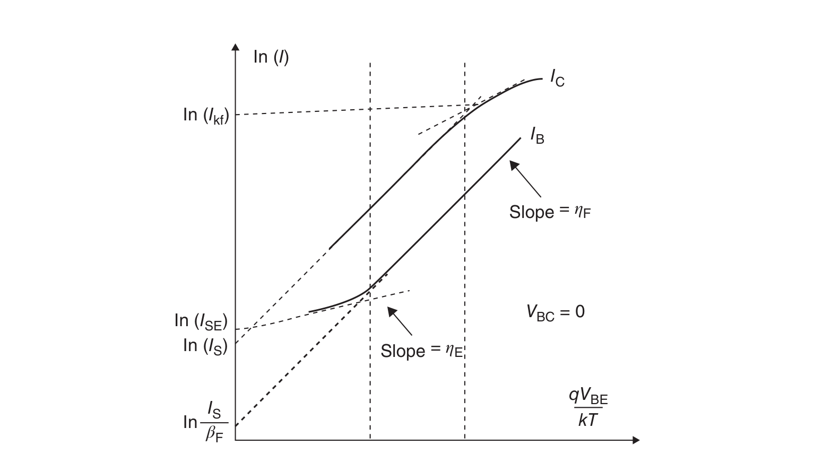
端子电流可表示为：
在器件的正向与反向放大工作下测得的数据以及测得的 Ic–Vce 特性用于参数提取。在正向放大工作时，将 Vbc 设为零并改变 Vbe；在相应 Vbe 电压下测得 Ib 与 Ic。对于反向放大工作，将 Vbe 设为零并在变化的 Vbc 电压下测得 Ib 与 Ie。图 3.41 给出了用于确定 BJT 模型参数的正向与反向测量方法。
模型参数 ISE、IS、βf、ne 与 nf 可由上述基极与集电极电流方程确定。
类似地，对于反向放大工作，有
模型参数 ISC、IS、βr、nc 与 nr 可由 Ib 与 Ic 曲线用优化方法确定。
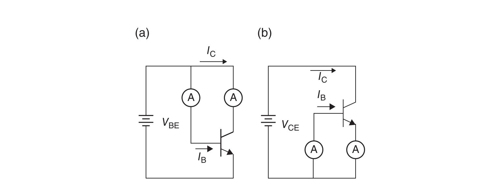
完整的 BJT 噪声等效电路模型如图 3.42 所示。电路模型包含众所周知的 π 型小信号等效电路以及五个噪声源 e2b、e2c、e2e、i2b 与 i2c。两个电流噪声源 i2b 与 i2c 代表本征 BJT 的内部噪声源。这两个噪声源以其在以频率 f 为中心、带宽 Δf 内的均方值表征，可由下式给出：
其中 Ib 与 Ic 分别是基极与集电极的直流电流。三个噪声源 e2b、e2c 与 e2e 表示外接电阻 RB、RC 与 RE 的噪声特性，可简单地表示为
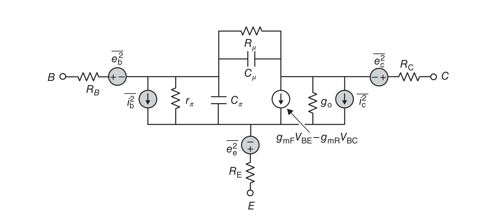
BJT 作为放大器使用时有三种基本组态。每种组态都是把 BJT 三个端子中的一个接地而得到的，从而构成一个二端口网络，接地端为输入端口与输出端口所共用。图 3.43 给出了 BJT 放大器的三种基本组态；下面我们将基于小信号等效电路模型的信号参数，讨论这些不同组态的微波性能。
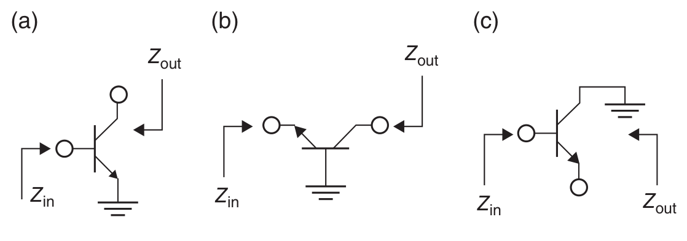
图 3.44 给出了正常偏置条件下 BJT 的本征小信号等效电路模型，其中 gm 为正向跨导。需要注意的是，本模型忽略了本征基极—集电极电阻 Rμ，这是因为 Rμ 的阻值很大，只要我们只关心正向工作，它对频率响应的影响并不显著。
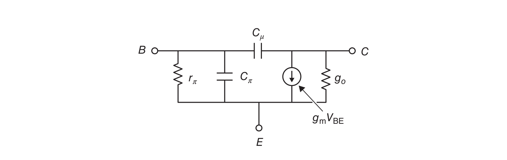
本征小信号等效电路模型的 Y 参数可表示为
根据 Y 参数与 H 参数之间的关系，可得
衡量 BJT 作为放大器高频工作能力的品质因数是单位增益频率，也称为特征频率 fT（下标 T 即由此而来）。特征频率定义为共发射极组态的短路电流增益降为 1 时所对应的频率。众所周知，H21 的定义正是正向短路电流增益；因此，特征频率 fT 可以很方便地由 H21 随频率变化的曲线确定。
假设 βF >> 1，则 H21 可改写为
其中最高频率 fo 与 β 截止频率 fβ 分别为
β 截止频率 fβ 定义为 |H21| 等于 βF/√2（相对低频值下降 3 dB）时的频率。图 3.45 给出了正向短路电流增益 |H21| 随频率的变化；当其下降到 1（|H21| = 1）时，fT 可由下式求得
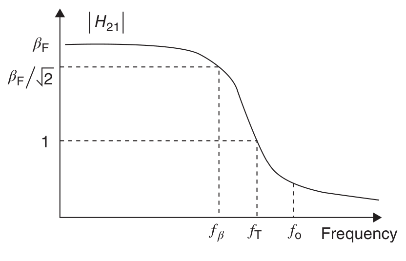
图 3.46 给出了 fT 随 IC 的变化：在峰值点之前，fT 随 IC 增大而升高；在峰值点之后，由于大电流注入效应的影响，fT 随 IC 继续增大而下降。
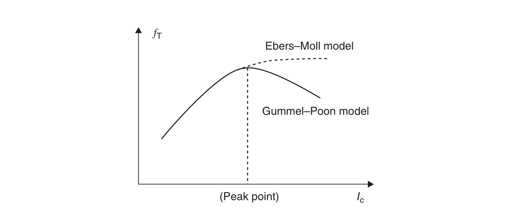
图 3.47 给出了共发射极组态的等效电路模型；输入反射系数 Γin 与输出反射系数 Γout 可表示为
其中 Zo 为特性阻抗（通常 Zo = 50 Ω），ZS 与 ZL 分别为源阻抗与负载阻抗（ΓS 与 ΓL 为相应的反射系数），Zin 与 Zout 分别为输入阻抗与输出阻抗。
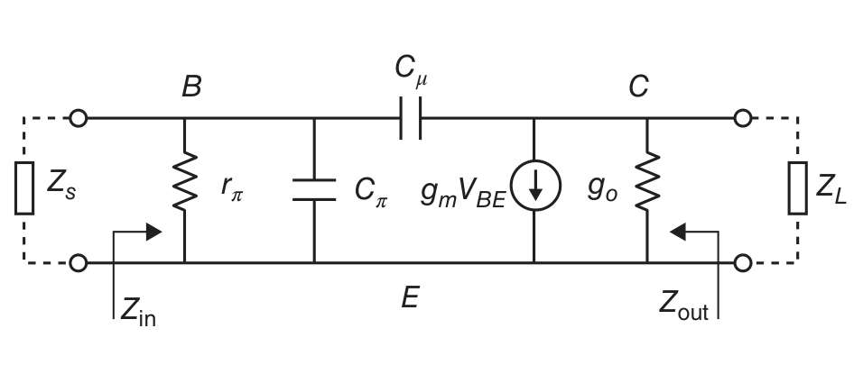
当源端与负载端均端接匹配阻抗（即 ZS = ZL = Zo）时，Zin 与 Zout 为
其中
Y 参数由式 (3.79)–(3.82) 给出。将式 (3.93) 与 (3.94) 代入式 (3.91) 与 (3.92)，可得
其中
在低频段，有
于是输入阻抗 Zin 与输出阻抗 Zout 可简化为
由此可见，共发射极组态具有中等大小的 Zin 与较高的 Zout，其电流增益与电压增益都很高。
图 3.48 给出了共基极组态的等效电路模型；BJT 的 Y 参数可表示为
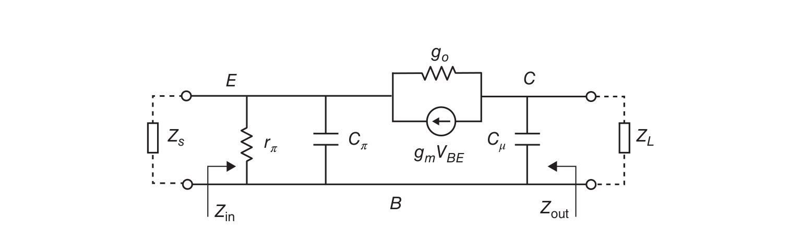
在低频段，输入阻抗 Zin 与输出阻抗 Zout 可近似表示为
总之，共基极组态呈现出较低的输入阻抗 1/gm 与较高的输出阻抗 1/go。其电压增益为正，且幅值与共发射极组态相同。共基极组态具有优良的高频性能，因而在与其他电路（如共发射极组态）组合实现高频放大器时十分有用。
BJT 基本组态中的最后一种是共集电极放大器，它在数字逻辑电路中非常重要。如图 3.49 所示，由于输出取自晶体管的发射极端，该网络又被称为射极跟随器。由于基极到发射极之间存在压降，输出电压总是略小于输入信号。因此，输出电压在幅值上跟随输入电压，且两者同相，这正是"射极跟随器"这一名称的由来。
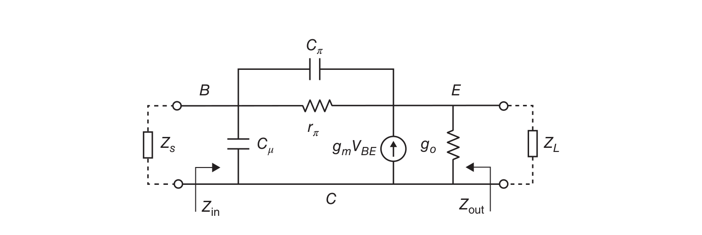
共集电极 BJT 的 Y 参数可表示为
在低频段，输入阻抗 Zin 与输出阻抗 Zout 可近似表示为
总之，共集电极组态呈现出中等大小的输入阻抗 rπ 与相对较低的输出阻抗 1/gm。其电压增益为正，且近似等于 1。射极跟随器组态常用于放大单元之间的电平移动。此外，它还可用于改善放大级之间的失配（阻抗变换），并可在高频段用于增益峰化。
表 3.2 总结了三种基本组态的比较 [6]。共发射极级是最常被采用的组态，因为它兼具相当高的输入阻抗、较高的输出阻抗以及很高的电流增益与电压增益，常用于单端低噪声放大器（LNA）与功率放大器（PA）。共基极组态具有可精确预测的低输入阻抗、高输出阻抗与高电压增益，但其电流增益接近 1；它是优良的电流缓冲器，常用于隔离电路节点。共集电极级通常称为射极跟随器，主要用作电平移动级和电压缓冲器，以隔离各级并提供额外的驱动能力；它具有高输入阻抗、低输出阻抗以及接近 1 的电压增益。
本章介绍了 pn 结二极管与 BJT 的基本工作机制，讨论了二极管与 BJT 常用的大信号与小信号等效电路模型，最后介绍了三种基本组态的微波性能。